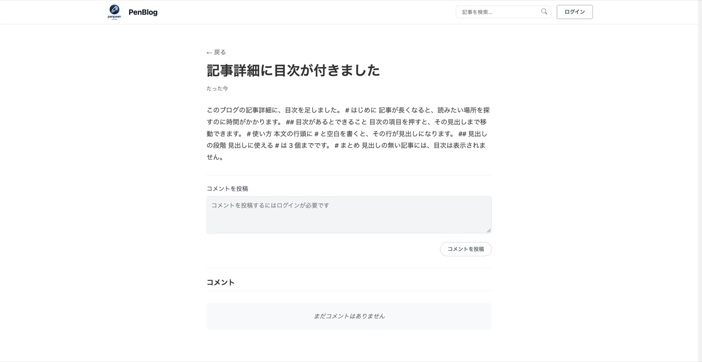
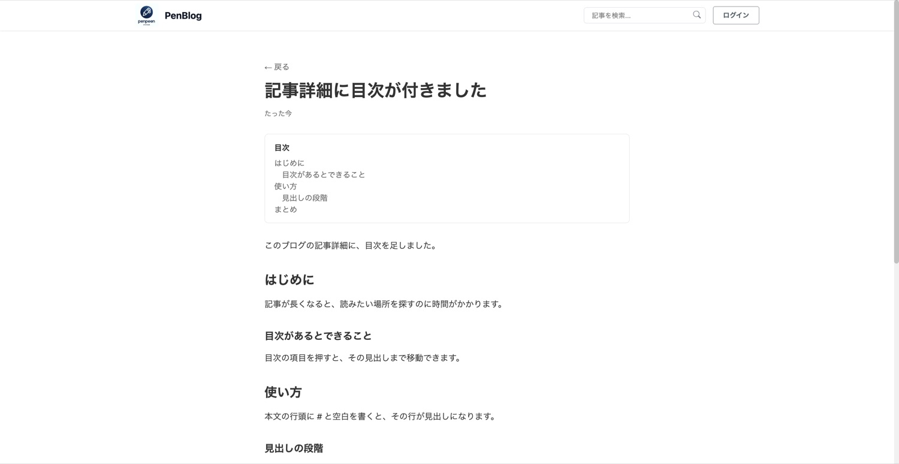
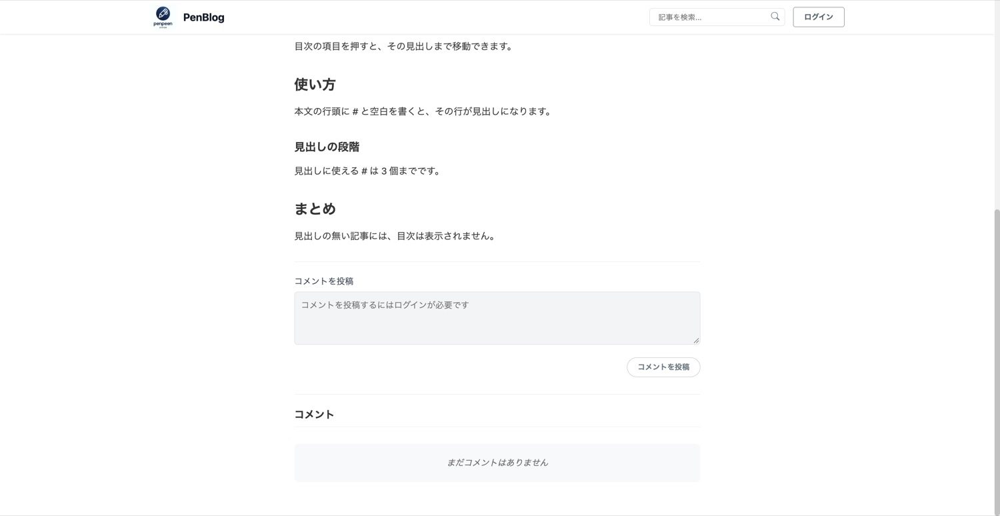
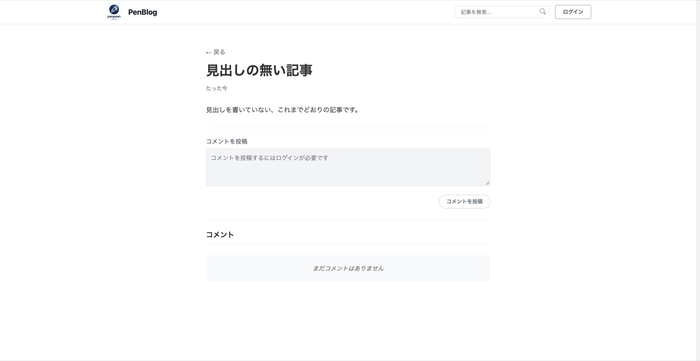

記事詳細に、本文の見出しから作った目次を表示する
https://github.com/PenPeen/next-blog/pull/176
1. 仕組みと変更の場所
変わるのは、フロントエンドの記事詳細ページだけ。記事を返すバックエンドは変えていない。
- 記事詳細
- 記事 1 件のタイトル、サムネイル、本文、コメントを表示するページ（
/posts/[id]） - 本文
- API が返す 1 つの文字列。Markdown としては表示していない
- 見出し
- 本文のうち、行頭が
#1〜3 個と空白で始まる行
2. 振る舞いの変化
見出しのある記事に目次が付き、見出しの行が見出しとして表示される。
記事詳細の表示（見出しが 2 つある記事）
3. 影響範囲
表示が変わるのは記事詳細だけ。同じ本文を表示する記事一覧は、これまでどおり文字列のまま出す。
- 行頭が
#と空白で始まる行を本文に書いていた既存の記事は、記事詳細でその行が見出しになり、目次が付く。該当する記事があるかは調べていない - 見出しの id は出現順の連番。見出しを足したり消したりすると、それより後ろの見出しへのリンク（
#heading-2など）の行き先が変わる
4. 検証
単体テストと、手元で起動した実際の画面で確かめた。
npm test 44 スイート 261 件 PASS）画面 = 手元で起動したアプリを Chrome で操作同じ記事を、変更前と変更後で開いた画面


目次の「使い方」を押したあとの画面 / 見出しの無い記事の画面


- 画面は、バックエンドを手元の Docker で起動し、見出しのある記事と無い記事を 1 件ずつ入れて確かめた
- スマートフォンの幅と、Chrome 以外のブラウザでは確かめていない
npm run lintはエラーなし
5. ファイルごとの変更
記事詳細の部品（1）が、本文を分ける処理（2）の結果を目次の部品（3）に渡す。
1/7 src/components/ui/PostContent/index.tsx記事詳細
本文を見出しと文章に分け、サムネイルの下に目次を置く。見出しは h2〜h4、文章は段落として表示する。
+ const blocks = splitByHeadings(post.content);+ const headings = blocks.filter((block) => block.type === 'heading'); // ...+ <TableOfContents headings={headings} /> <div className={styles.content}>- {post.content}+ {blocks.map((block, index) => {+ if (block.type === 'text') {+ return <p key={index}>{block.text}</p>+ }+ const HeadingTag = `h${block.level + 1}` as 'h2' | 'h3' | 'h4' // ...
2/7 src/lib/postHeadings.ts記事詳細
本文を 1 行ずつ見て、見出しの行とそれ以外の文章に分ける。見出しには出現順に heading-1 からの id を振る。
+ const HEADING_LINE = /^(#{1,3})\s+(.+)$/ // ...+ headingCount += 1+ blocks.push({+ type: 'heading',+ id: `heading-${headingCount}`,+ level: match[1].length,+ text: match[2].trim(),+ })
3/7 src/components/ui/TableOfContents/index.tsx記事詳細
見出しの一覧を、それぞれの id へのリンクとして並べる。見出しが 0 件なら何も出さない。
+ if (headings.length === 0) return null // ...+ <li key={heading.id} className={styles[`level${heading.level}`]}>+ <a href={`#${heading.id}`} className={styles.link}>+ {heading.text}+ </a>
TableOfContents/index.tsx#L4-L21
4/7 CSS（2 ファイル）記事詳細
目次の枠と字下げ、本文の見出しの余白を足した。
TableOfContents.module.css、PostContent.module.css#L42-L46
5〜7/7 テスト記事詳細
- postHeadings.test.ts（新規）: 見出しと文章の分け方、id の連番、
#が 4 個以上の行と空白の無い行を見出しにしないこと - TableOfContents.test.tsx（新規）: 見出しごとのリンク、見出しが無いときに何も出さないこと
- PostContent.test.tsx: 目次のリンク先と見出しの id が一致すること、見出しが無い記事に目次が出ないこと
6. 設計レビュー
提案が 1 つある（見出しの id の作り方）。アンチパターンは見つからなかった。
| PR が採った方式 | 一般的なやり方 | リポジトリの慣習 |
|---|---|---|
見出しは行頭の # 1〜3 個で判定する | △ 仕様より狭い CommonMark | ー 前例なし |
| 見出しの id は出現順の連番 | △ 別の方式もある rehype-slug | ー 前例なし |
目次は nav とページ内リンク | ● 合う MDN | ● 合う 似た実装 |
本文の見出しは h2 から始める | ▲ 未確認 | ● 合う 題名が h1 |
分ける処理は src/lib、目次は ui の部品 | ▲ 未確認 | ● 合う 似た実装 |
提案: 見出しの id を、連番ではなく見出しの文言から作る
| PR のやり方（連番） | 代案（文言から作る） | |
|---|---|---|
| 得るもの | 実装が小さい。同じ文言の見出しがあっても重ならない | 見出しを足しても消しても、ほかの見出しの id が変わらない |
| 失うもの | 見出しを足すと、後ろの見出しへのリンクの行き先が変わる | 日本語や記号の扱いと、同じ文言に番号を足す処理が要る |
PR 本文は「同じ文言でも重ならない」ことを連番の理由にしている。rehype-slug は、文言から id を作ったうえで、同じ文言には elit、elit-1 のように番号を足して重なりを避けている。
気になる点（軽微）
- 見出しの段階を表す値の型が数値のままで、
h2〜h4に収まることを型で示せていない - 目次の
aria-labelは日本語（「目次」）、ページ送りは英語（「Pagination」）で、言語がそろっていない